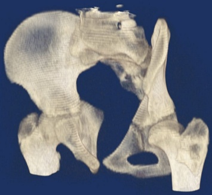

FEA (Sonlu Elemanlar Analizi) ve CFD (Hesaplamalý Dinamiði)
MIMICS FEA/ CFD modülü, görüntü datalarýnýz ve sonlu elemanlar analizi veya hesaplamalý akýþkanlar mekaniði arasýnda mükemmel bir köprü saðlar. Modül, görüntülerinizi gerçekçi bir FEA veya CFD için kýsa bir süre içinde hazýr hale getirir. Öncelikle taranmýþ tüm görüntüler hassas bir þekilde MIMICS ile 3 boyuta çevrilir, modül yüzey aðýný (surface mesh) optimize etmenize, hassas bir hacim aðý (volume mesh) oluþturmanýza, malzeme özelliklerini belirlemenize ve bu verileri istediðiniz herhangi bir FEA veya CAE paket programlarýna (Ansys, Abaqus, Fluent, Msc. Patran/Nastran, LS- Dyna gibi) iletebilmenize izin verir.
Kompleks geometrileri düzgün bir simülasyon için hazýr hale getirmek oldukça karýþýk ve zaman alan bir süreçtir. MIMICS FEA/ CFD modülü bu karýþýk iþlemi basitleþtirmek ve çýktýlarýnýzý geliþtirmek için ihtiyacýnýz olan tüm araçlarý saðlamaktadýr. Tersine Mühendislik olarak bilinen CAD formatlarý ayrýntýlý olarak dönüþtürme iþlemi, MIMICS' in bu modülü sayesinde ortadan kalkmaktadýr, hazýrlýk süresi ise önemli ölçüde azaltýlmaktadýr.
MIMICS ile BT' den (Bilgisayarlý Tomografi) alýnan görüntüler 5 hýzlý adýmda FEA/CFD dosyalarý için anýnda kullanýlabilir hale getirilir.
1. Görüntü verisinden 3 boyutlu obje oluþturma:
Bu iþlemde ilk adým BT görüntülerini ayýrmak ve yüksek hassasiyette bir 3 boyutlu model oluþturmaktýr. Güçlü segmentasyon araçlarý MIMICS' i bu iþlem için en iyi seçim yapmaktadýr.
|
 |
Ýnsan gövdesinin 3 Boyutlu parçalý gösterimi |
2. Yüzey Aðý Optimizasyonu ve Biçim Deðiþtirme:
3 Boyutlu obje oluþturulduktan sonra yüzey aðý kalitesi optimize edilmelidir. MIMICS' in "wrap" fonksiyonu ile küçük delikleri kolayca kapatabilir, objenizi düzgünleþtirebilirsiniz. Bu yeniden að oluþturma (remeshing) kapasitesi (tamamen otomatik) ile optimizasyon aþamasýnda önemli ölçüde zaman tasarrufu yapýlmaktadýr.
3. Hacim Aðý Oluþturma:
Yüzey aðý optimizasyonundan sonra, bunu tek bir iþlem ile hacim aðýna dönüþtürebilirsiniz. Artýk bu aþamadan sonra 3 Boyutlu modelinize ait, herhangi bir FEA/CFD yazýlýmý tarafýndan okunabilen bir hacim aðýna sahip olmuþ olacaksýnýz. Oluþturulan bu hacim aðý, malzeme özelliklerini belirlemek üzere bir sonraki aþamalarda kullanýlacaktýr.
4. Görüntü Üzerindeki Gri Skala Baz Alýnarak Malzeme Özellikleri Belirleme:
Bu aþamada modeliniz artýk sadece bir geometri ibaret deðil, ayný zamanda yoðunluk (density) ve bilgi içermektedir. MIMICS bu verileri kullanmanýza yardým etmektedir. Görüntünün gri skala deðerlerini (Hounsfield Birimi) bir önceki adýmda yarattýðýnýz hacim aðýnda malzeme özellikleri belirlemek için kullanabilirsiniz. Böylece daha gerçekçi bir simülasyon uygulamanýz mümkün olmaktadýr.

5. Sonuçlarýn Herhangi bir FEA veya CFD Paket Programlarýna Aktarýlmasý:
Bu aþamada artýk 3 boyutlu modeliniz, istediðiniz bir paket programýnda analiz yapabilmek için aktarýlmaya hazýr haldedir. MIMICS, çalýþmalarýnýzý, ana FEA/CFD paket programlarýna, bu programlarýn kullandýðý formata iletebilmenize izin verir. Sizin tek yapmanýz gereken, uygun sýnýr þartlarýný belirlemek ve analizi baþlatmaktýr.
|
|
Ýnsan eli kemik yoðunluðunun gösterimi |
Kiþiye özel çene implantýnda Von Mises gerilim daðýlýmý |
|